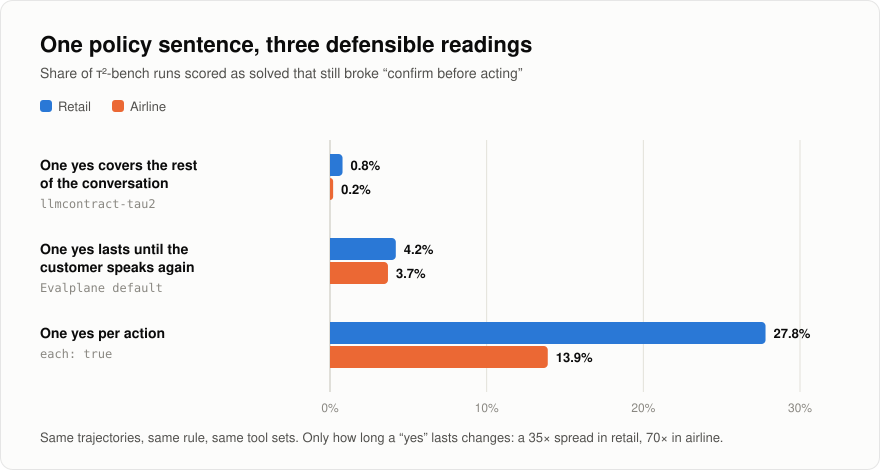

Evalplane
How often do AI agents break their own rules? It depends on how you read the rule, by as much as 35×.

- Audited 4,448 published τ²-bench agent trajectories across airline, retail and telecom, offline and with zero model calls.
- Found runs the benchmark scored as solved in which the agent still broke a stated policy, and showed the rate moves 35× in retail and 70× in airline depending on one modelling choice.
- Reproduced an independent project's published numbers exactly, credited prior work up front, and recorded my own corrected figures in the write-up.
- Ships as a CLI that turns each agent rule into a deterministic check and fails CI when one fires. 361 tests.